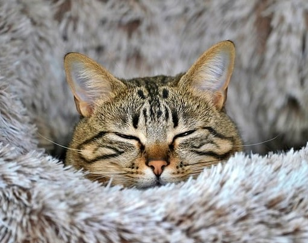

O Gato (nome científico: Felis silvestris catus)
É um mamífero carnívoro da família dos felídeos, muito popular como animal de estimação
Ocupando o topo da cadeia alimentar, é predador natural de diversos animais, como roedores, pássaros, lagartixas e alguns insetos
Dorminhoco
Preguiçoso
Gatos são noturnos e passam boa parte do dia dormindo.
Gatos são preguiçosos e vivem deitados pelos cantos.
Independente
Arisco
Gatos são independentes e parecem não se importar ou precisar de ninguém.
Gatos podem ser ariscos e podem não gostar de contato ou carinho.